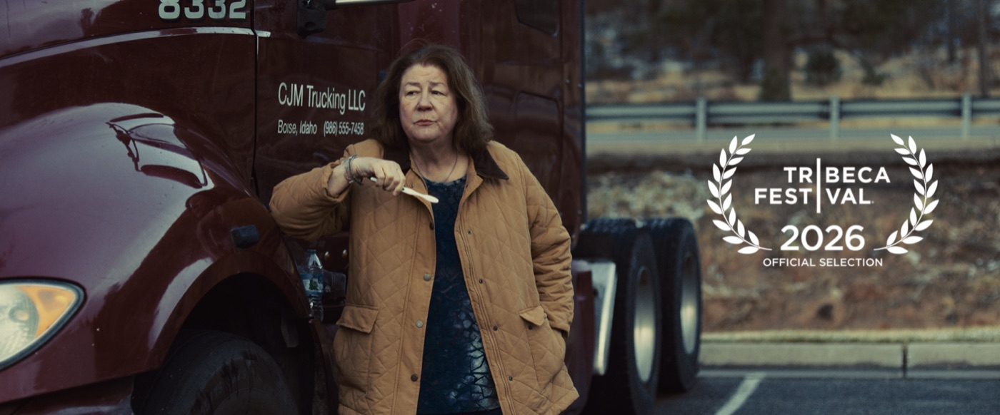

The Long Haul
Back to FilmThe Long Haul is the debut feature film by writer and director David Drake. It stars Margo Martindale as CJ Montague, a long-haul truck driver in Idaho who is facing retirement and the potential paroling of a prisoner who destroyed her life 25 years earlier. It shot in New Mexico in 2025 and was produced by Braintrust and Spiral Stairs.

The Long Haul, 91 minutes, Official Selection, Tribeca Festival
Cast
- Margo Martindale as CJ
- Cole Sprouse as Junior
- Stephen Root as Andy
- Yalitza Aparicio as Araceli
- Jefferson White as Wayne
- Wes Studi as Buck
Credits
- Written and Directed by David Drake
- Cinematography by Mika Altskan
- Edited by Sarah Brewerton
- Music by Chris Roe
- Production Design by Lorus Allen
- Sound by Ines Adriana
- Produced by Sam Bank and Helene Sifre of Braintrust
- Produced by Juliet Berman of Spiral Stairs
- Co-Produced by Heather Denton
Press
- Feature | The Hollywood Reporter: Margo Martindale Just Gave the Film Performance of a Lifetime.
- Feature | IndieWire: What Trucking Taught Me About Making an Independent Film
- Interview | Eye for Film: One For The Road
- Interview | Cinephile Mike: Interview with David Drake
- Review | Rachel's Reviews: Tribeca 2026: The Long Haul
- Review | DMovies: The Long Haul
- Review | Film-Book: Margo Martindale Delivers a Career-Best Performance in This Emotional Drama
- Review | Josh at the Movies: Tribeca 2026: The Long Haul
Festivals
- World Premiere, 7 June 2026, Tribeca Festival
Listings
The film was formerly known as Dead Letters during production and in early press coverage.